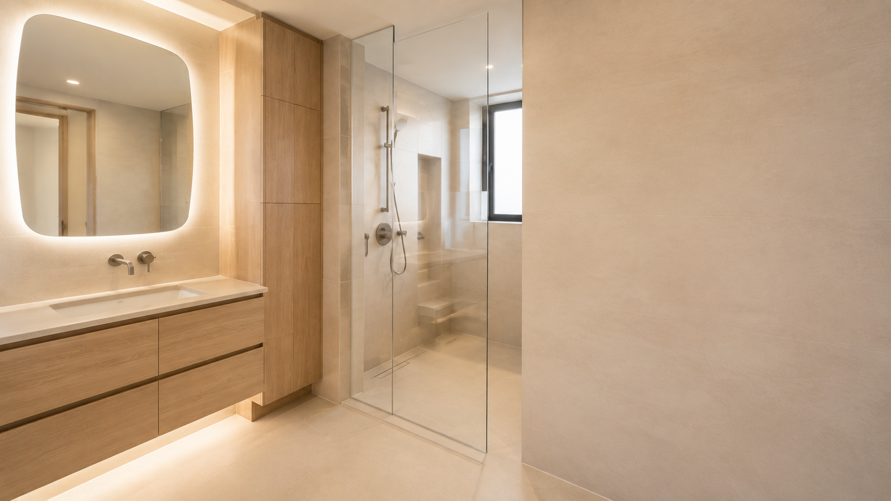
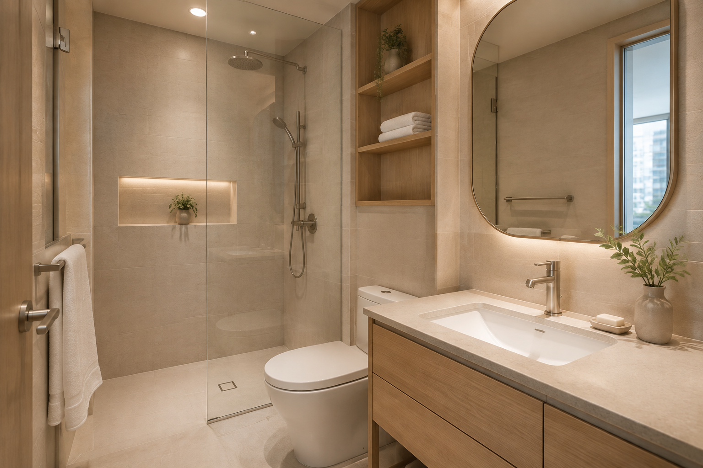
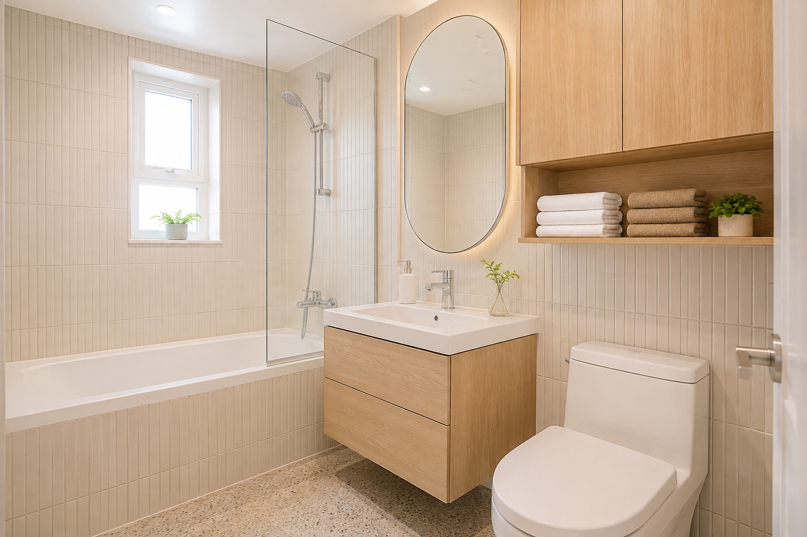
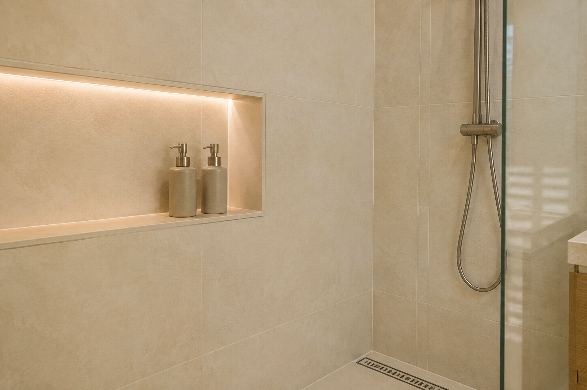

가족 수와 사용하는 물건을 살펴 거울장, 하부장, 선반의 위치를 정합니다.

FOR THE WAY YOUR FAMILY LIVES
매일 쓰는 공간을
편안하게.
예쁜 욕실을 넘어, 씻고 정리하고 청소하는가족의 하루가 조금 더 쉬워지도록 만듭니다.
01 / 먼저 듣는 이야기
욕실을 바꾸고 싶은 이유는
집마다 다릅니다.
물때가 잘 보이는 접점과 손이 닿기 어려운 틈을 줄이는 방향부터 생각합니다.
밝은 면의 비율, 거울과 조명, 타일 배치를 조절해 체감 공간을 정돈합니다.

02 / FAMILY BATH
생활이 편해지는
작은 차이를 찾습니다.
- 01물건이 밖에 쌓이지 않는 수납
- 02씻는 동선과 부딪히지 않는 배치
- 03부드럽지만 충분히 밝은 조명
- 04관리하기 쉬운 줄눈과 접점
03 / THREE HOME SCENES
가족의 생활에 맞춘
세 가지 욕실 장면

01 · COMPACT FAMILY BATH
작아도 부족하지 않게
욕조, 세면대, 수납이 서로 방해하지 않도록 작은 욕실의 우선순위를 정합니다.

02 · EASY CARE DETAIL
청소하기 쉬운 디테일
니치와 배수, 유리 파티션이 만나는 곳까지 관리의 관점에서 살핍니다.
“완공하는 날보다
살아가는 날이 더 중요하니까.”
예쁜 사진으로 끝나지 않고, 실제 사용에서 불편하지 않은 욕실을 목표로 합니다.
05 / REAL WORK JOURNAL
실제 현장은
운영자의 블로그에서.
사진과 공정 기록은 사이트마다
각 운영자 본인의 블로그만 연결합니다.OWNER'S NAVER BLOG운영자 확정 후 사례 연결
각 운영자 본인의 블로그만 연결합니다.OWNER'S NAVER BLOG운영자 확정 후 사례 연결
06 / A GENTLE START
우리 집의 불편부터
편하게 들려주세요.
지역과 욕실 사진, 가족이 가장 불편한 점을 보내주시면
확인이 필요한 내용부터 차근차근 안내합니다.